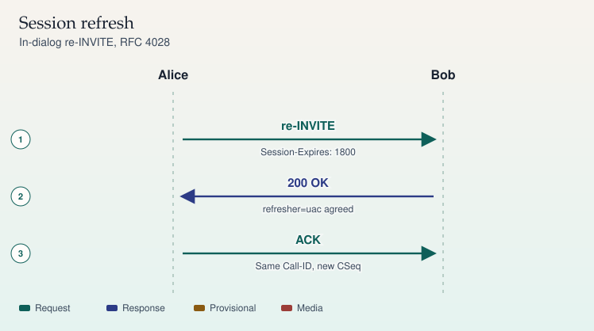

RFC 4028
Session refresh
A session timer refreshes a dialog that would otherwise look up forever after a lost BYE.
- INVITE — Session-Expires and a refresher are negotiated.
- 200 — The peer agrees, or it rejects with 422 and a Min-SE.
- UPDATE — At about half the interval the refresher sends UPDATE or re-INVITE.
- 200 — The session lives. If the refresh fails, the dialog is torn down.
A 422 means your Session-Expires was below the peer's Min-SE. Raise it. Do not disable timers to hide a stuck call.
Sources
Study card carried forward
SIP · RFC 4028 · RFC 3311
re-INVITE and session refresh
A re-INVITE changes an existing dialog or proves the dialog is still alive. It keeps the Call-ID and both tags. It uses a new, higher CSeq.

On a phone, swipe a wide ladder sideways. The steps below repeat the same sequence.
Sequence
- re-INVITE — Alice to Bob. Session-Expires: 1800
- 200 OK — Bob to Alice. refresher=uac agreed
- ACK — Alice to Bob. Same Call-ID, new CSeq
What a re-INVITE may change
The same tool covers hold, a codec change, a new media address, adding a video m= line, or a session-timer refresh. The offer/answer rules of RFC 3264 still apply. If the re-INVITE fails, the session continues with the previously agreed parameters (RFC 3261 section 14).
If both sides send a re-INVITE at the same time, one of them receives 491 Request Pending. RFC 3261 tells the two UAs to retry after different short random delays so they do not collide again. That condition is called glare.
Session timers
RFC 4028 adds Session-Expires and Min-SE. The refresher is uac or uas. Before the interval ends, the refresher sends a re-INVITE or an UPDATE. A request with a session interval below the peer's minimum can draw 422 Session Interval Too Small.
UPDATE (RFC 3311) can refresh or modify session state without the full re-INVITE impact, including during an early dialog. Use it when you need a lightweight refresh. Use re-INVITE when you need the familiar INVITE transaction, including the cases your peer does not implement UPDATE.
Sources
- RFC 3261, section 14 (modifying a session)
- RFC 3311, the UPDATE method
- RFC 4028, session timers in SIP